Planet Openings
The play review found every planet opened the same way: one crystal a short walk from the landing, toward the middle, the same size every time. Now each biome has its own start. The meadow keeps the old one, so the first planet plays as before. Every picture pairs main (before) with this change (after): the landing at zoom 3 at 1 s, seed 2, the squad in the middle-left of each frame.
Distances and radii in dish cells (half a map cell), straight from the landing. Under each pair: seed 2's crystals within 130 dish cells of the landing, nearest first (the three nearest), before and after; the planet's own fields count too.
Each biome's start
1. MeadowOne crystal toward the middle, as before
The meadow keeps the old start, so the first planet plays as it did.
before 36 away, r 8, charge 96; 66 away, r 14, charge 256; 70 away, r 8, charge 128; and 4 more
after 36 away, r 8, charge 96; 66 away, r 14, charge 256; 70 away, r 8, charge 128; and 4 more

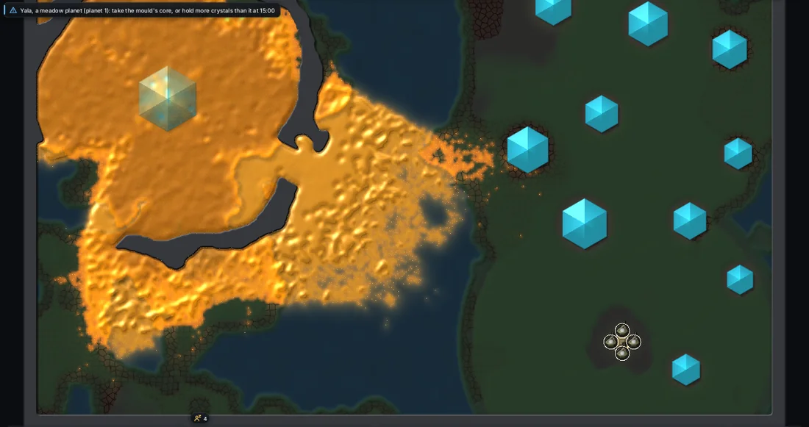
2. BarrensOne small crystal, a walk off
A lean start: the first bank is farther and smaller.
before 43 away, r 12, charge 256; 114 away, r 8, charge 128
after 70 away, r 10, charge 128; 112 away, r 6, charge 128
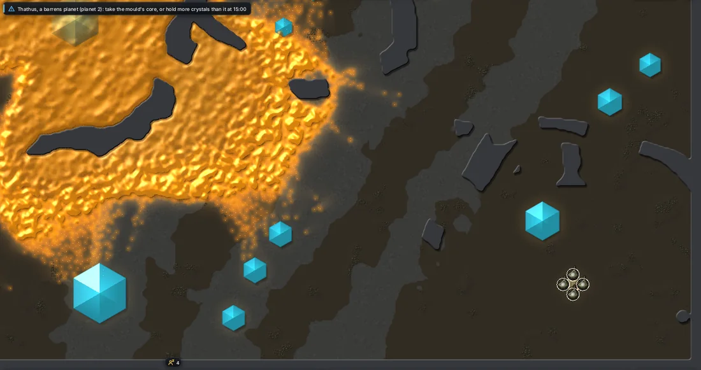
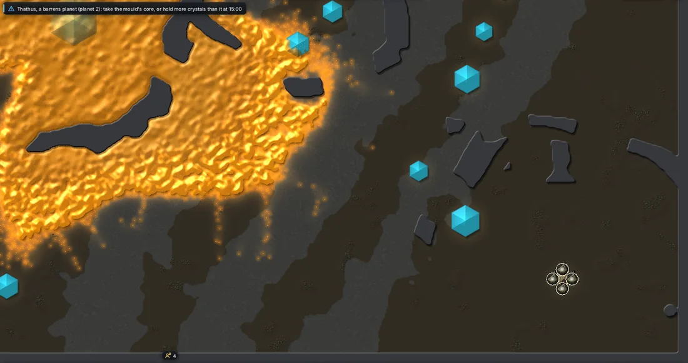
3. FenTwo middling crystals
Two banks side by side: a choice of where to settle.
before 37 away, r 10, charge 128; 55 away, r 10, charge 96; 59 away, r 12, charge 192
after 66 away, r 12, charge 192; 69 away, r 10, charge 192; 118 away, r 10, charge 128
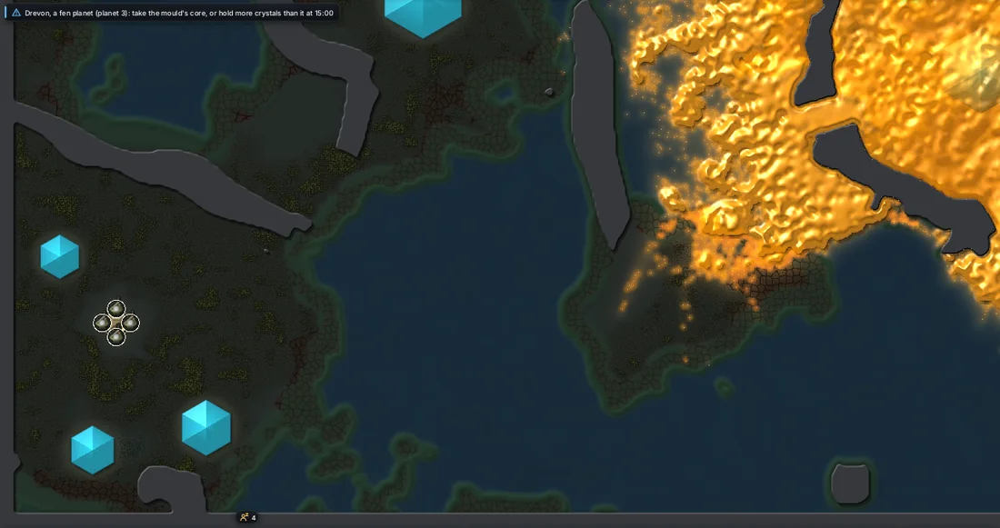
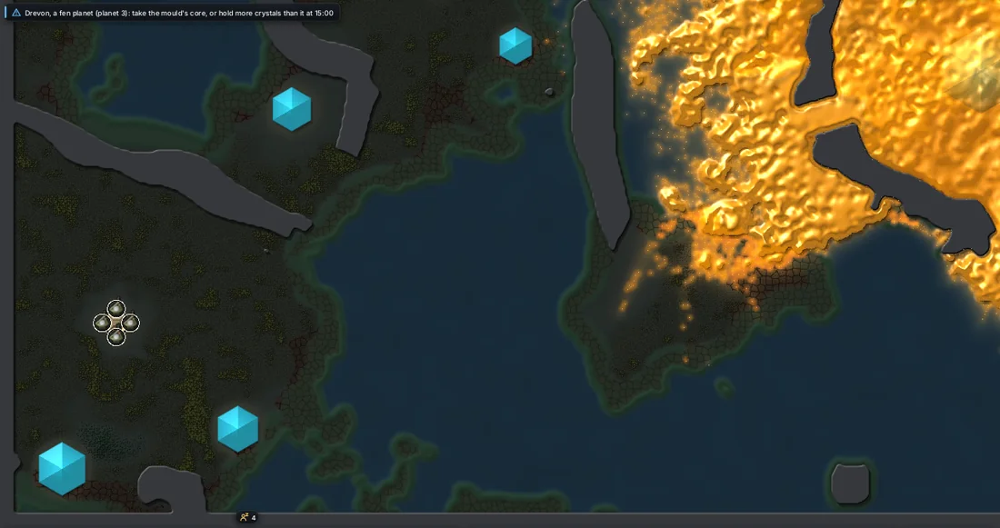
4. River valleyOne big crystal across the floor
A larger prize, farther out.
before 46 away, r 8, charge 96; 62 away, r 12, charge 192; 72 away, r 10, charge 128; and 7 more
after 46 away, r 8, charge 96; 72 away, r 10, charge 128; 73 away, r 10, charge 128; and 7 more
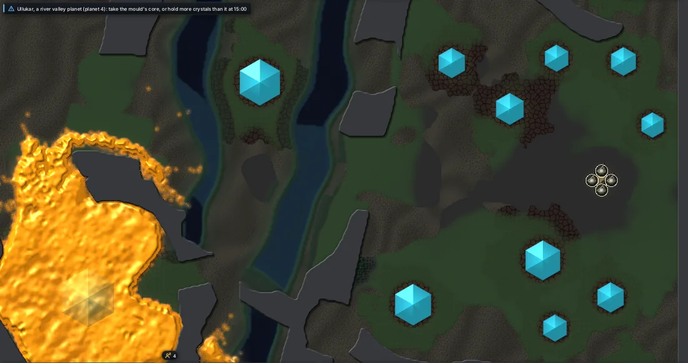
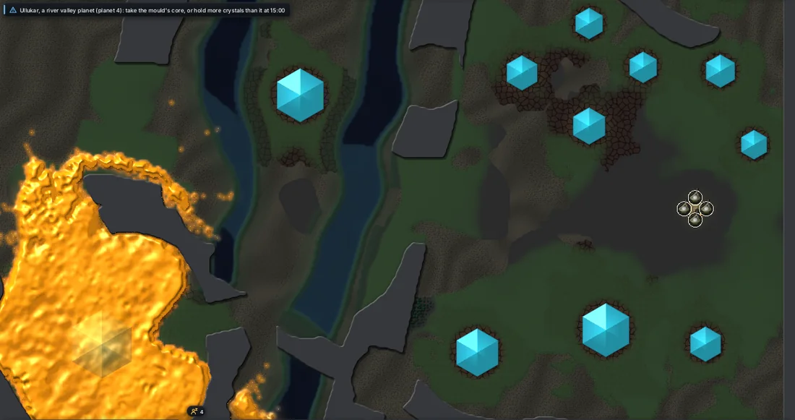
5. JungleThree small crystals close by
Small banks in the undergrowth, all within a short walk.
before 60 away, r 14, charge 256; 64 away, r 12, charge 192; 94 away, r 10, charge 96; and 1 more
after 40 away, r 11, charge 96; 46 away, r 9, charge 128; 50 away, r 8, charge 128; and 4 more
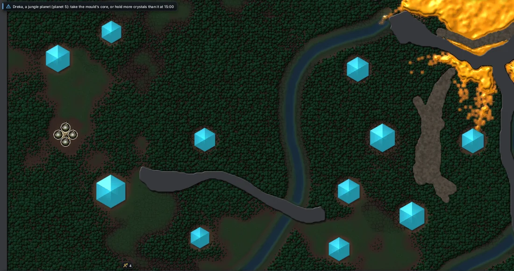
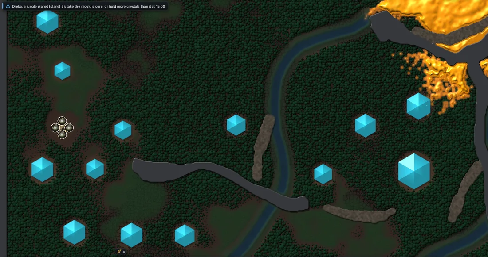
6. HighlandsOne rich crystal, a climb away
Charge 384, out past the rocky rooms near the landing.
before 46 away, r 6, charge 96; 50 away, r 14, charge 192; 54 away, r 8, charge 96; and 5 more
after 36 away, r 8, charge 96; 46 away, r 6, charge 96; 54 away, r 8, charge 96; and 5 more
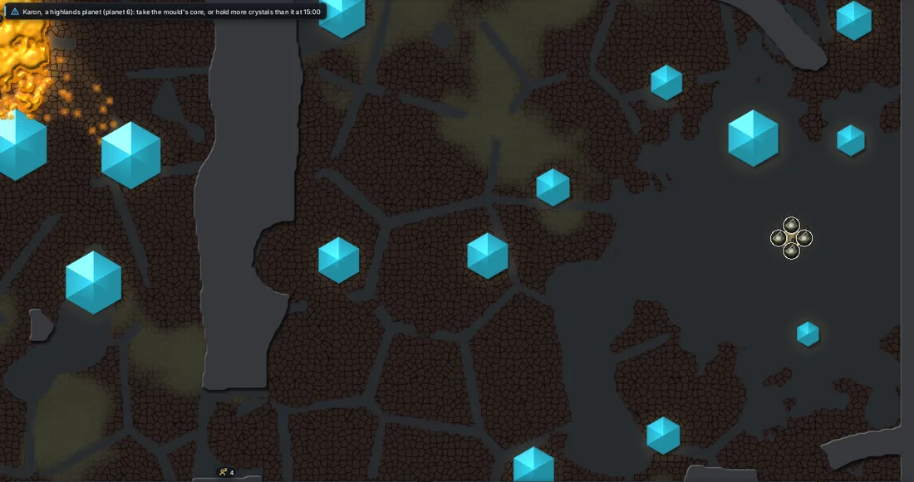
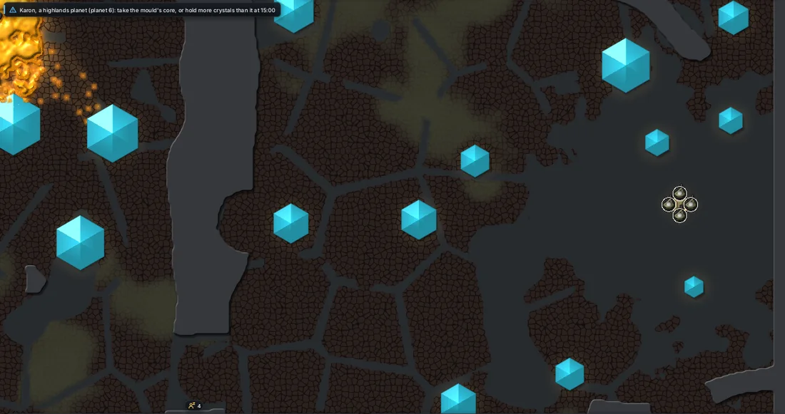
7. CavesTwo small crystals in the landing's cavern
Close and snug, inside the first cavern.
before 42 away, r 14, charge 256; 48 away, r 10, charge 96; 122 away, r 8, charge 96
after 46 away, r 10, charge 192; 49 away, r 9, charge 192; 76 away, r 8, charge 96

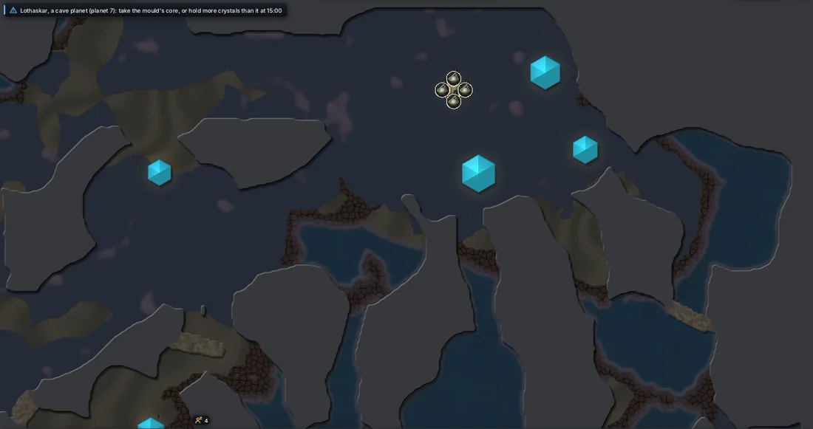
8. CoreOne rich crystal toward the slime
Charge 512, on the way to the nearest nest: fought over from the start.
before 58 away, r 12, charge 192; 122 away, r 9, charge 128
after 113 away, r 18, charge 512
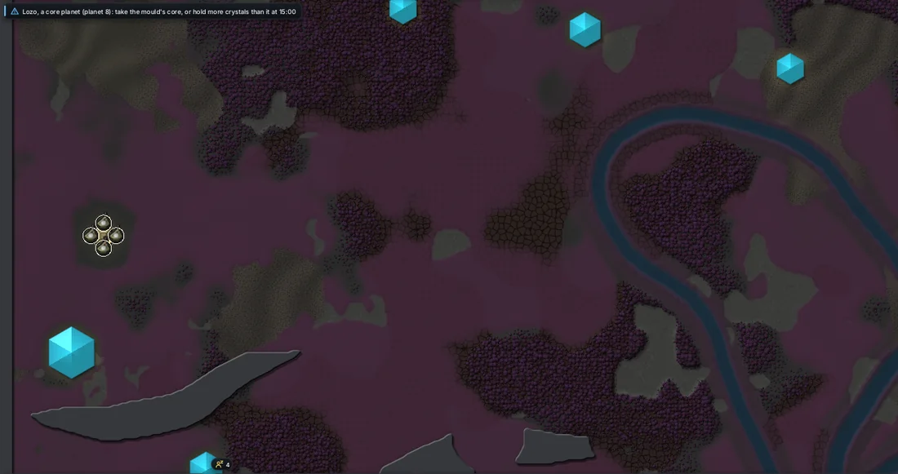
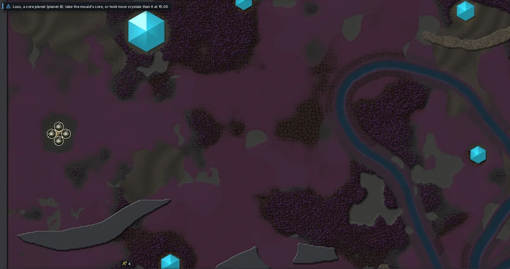
Measured
By planet, medians over 20 seeds. Energy is radius squared times charge (map cells), summed over the crystals within 130 dish cells of the landing, in thousands.
| Planet | Nearest, before | Nearest, after | Within 130 | Energy within 130 | First tries |
|---|---|---|---|---|---|
| 1 Meadow | 44 (37-64) | 44 (37-64) | 5.5 → 5.5 | 428 → 428 | 18 → 18 |
| 2 Barrens | 52 (40-66) | 74 (40-89) | 4 → 4 | 295 → 200 | 20 → 19 |
| 3 Fen | 52 (37-64) | 56 (38-68) | 3 → 4 | 232 → 253 | 18 → 18 |
| 4 River valley | 51 (37-79) | 69 (35-88) | 5 → 3 | 339 → 475 | 18 → 18 |
| 5 Jungle | 48 (35-72) | 40 (35-51) | 4 → 5 | 279 → 201 | 19 → 19 |
| 6 Highlands | 46 (35-95) | 81 (36-114) | 2.5 → 2.5 | 223 → 404 | 15 → 13 |
| 7 Caves | 44 (39-55) | 40 (38-47) | 3 → 3.5 | 215 → 189 | 19 → 19 |
| 8 Core | 60 (39-100) | 94 (44-115) | 2 → 1 | 180 → 701 | 16 → 17 |
The nearest crystal is sometimes one of the planet's own fields, not the opening. A planet that fails its first try is built again with the next seed; none needed the open fallback.
Tried on the way
- The barrens at 150-200 and the highlands at 160-210 map cells: the first crystal went past the check's 200-cell walk on four planets; both came in.
- The highlands' crystal 32-36 across: no better on first tries than 28-31, so the prize is its charge, not its size.
- Films with the greedy hand: on planets it harvested nothing, before or after, so this page shows stills.
Not done here, and next
- Does each start play as its name says? For your play; the starting bank and squad are the run's.
- Next: nests kept off river crossings.